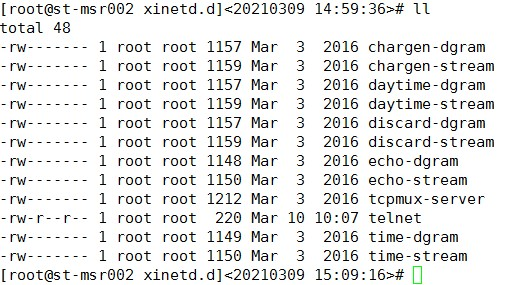
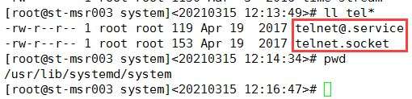
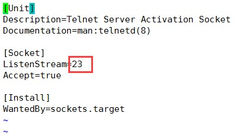
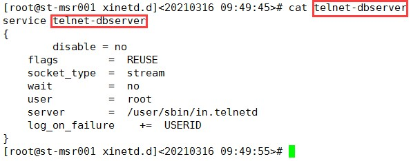
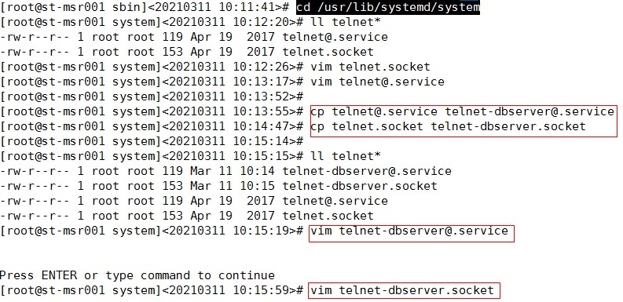
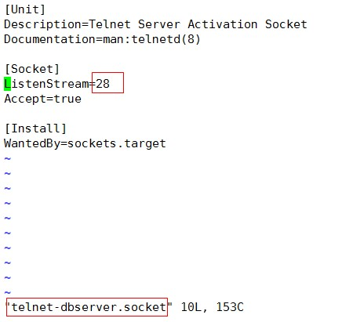
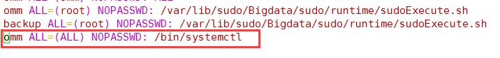
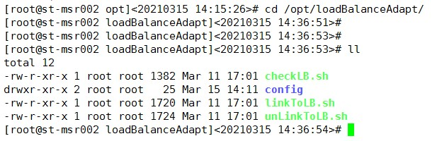
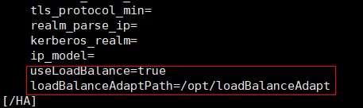
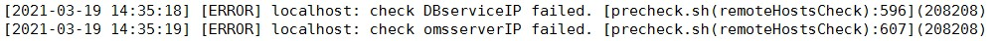

1 简介¶
本文档提供了基于微软云的负载均衡器替代浮动IP适配代码和安装指导，相关原理介绍参考文档《MRS使用负载均衡实现HA适配说明书》。
负载均衡器客户端适配代码参考附件“loadBalanceAdapt.rarM“。
本文档中出现的IP地址和端口号仅为举例，使用时请以现场实际情况为准。
以下步骤均在为MRS发放完虚拟机后进行操作。
2 负载均衡器创建¶
- 在安装MRS之前必须先创建负载均衡器，以下7种组件涉及浮动IP：OMS、DBService、Hue、Loader、Solr、Mapreduce、GraphBase。其中OMS均衡器、DBServer均衡器属于基础组件，安装时必选，其它5个组件的均衡器如果需要安装或对其有依赖，则也需要创建均衡器，否则不需要创建。
- 可能存在某个节点上需要创建多个负载均衡器，此时，同一节点上不同的负载均衡器之间的运行状况探测端口不能重复。
- 申请创建负载均衡器时需要规划好该组件实例部署的节点，以此作为均衡器的后端池主机，一般选择两个节点，分别用作主备节点。
-
telnet服务的默认端口号为23，为避免端口冲突优先使用默认的端口号，选择其他端口时需确保端口没有被其他服务使用。
创建负载均衡器方法如下，创建后为每个均衡器绑定公共IP，并记录IP地址。
2.1 OMS均衡器（必选）MMM¶
2.1.1 添加运行状况探测¶
-
名称：probe-oms
-
协议：TCP
-
探测端口：23
2.1.2 添加后端池主机¶
- 名称：backendpool-oms
- 192.168.2.183（安装OMS的虚拟机）
- 192.168.2.184（安装OMS的虚拟机）
2.1.3 添加均衡器规则¶
- 后端池：选择添加后端池主机所配后端池backendpool-oms。
- 运行状况监测：选择添加运行状况探测所配的探测probe-oms。
- 负载均衡器协议：UDP
- 前端端口与后端端口一一对应，分别如下：
- 22
- 123
- 20000
- 20008
- 20009
- 20010
- 20011
- 20012
- 20014
- 20018
- 20025
- 20026
- 20027
- 21201~21232（范围之间所有端口）
- 21405
- 21750
- 21820
- 28443
2.2 DBService均衡器（必选）¶
2.2.1 添加运行状况探测¶
- 名称：probe-dbservice
- 协议：TCP
- 探测端口：28
2.2.2 添加后端池主机¶
- 名称：backendpool-dbservice
- 192.168.2.183（安装DBService的虚拟机）
- 192.168.2.184（安装DBService的虚拟机）
2.2.3 添加均衡器规则¶
- 后端池：选择添加后端池主机所配后端池backendpool-dbservice。
- 运行状况监测：选择添加运行状况探测所配的探测probe-dbservice。
- 负载均衡器协议：UDP
- 前端端口与后端端口一一对应，分别如下：
- 22
- 20051
2.3 Mapreduce均衡器（使用或依赖此组件时必选）¶
2.3.1 添加运行状况探测¶
- 名称：probe-mapreduce
- 协议：TCP
- 探测端口：23
2.3.2 添加后端池主机¶
- 名称：backendpool-mapreduce
- 192.168.2.185（安装Mapreduce的虚拟机）
- 192.168.2.186（安装Mapreduce的虚拟机）
2.3.3 添加均衡器规则¶
- 后端池：选择添加后端池主机所配后端池backendpool-mapreduce。
- 运行状况监测：选择添加运行状况探测所配的探测probe-mapreduce。
- 负载均衡器协议：UDP
- 前端端口与后端端口一一对应，分别如下：
- 22
- 26009
- 26012
- 26013
- 26014
- 26015
2.4 Solr均衡器（使用或依赖此组件时必选）¶
2.4.1 添加运行状况探测¶
- 名称：probe-solr
- 协议：TCP
- 探测端口：28
2.4.2 添加后端池主机¶
- 名称：backendpool-solr
- 192.168.2.185（安装SolrServerAdmin的虚拟机）
- 192.168.2.186（安装SolrServerAdmin的虚拟机）
2.4.3 添加均衡器规则¶
- 后端池：选择添加后端池主机所配后端池backendpool-solr。
- 运行状况监测：选择添加运行状况探测所配的探测probe-solr。
- 负载均衡器协议：UDP
- 前端端口与后端端口一一对应，分别如下：
- 22
- 21100
- 21101
2.5 GraphBase均衡器（使用或依赖此组件时必选）¶
2.5.1 添加运行状况探测¶
- 名称：probe-graphbase
- 协议：TCP
- 探测端口：23
2.5.2 添加后端池主机¶
- 名称：backendpool-graphbase
- 192.168.2.187（安装LoadBalancer的虚拟机）
- 192.168.2.188（安装LoadBalancer的虚拟机）
2.5.3 添加均衡器规则¶
- 后端池：选择添加后端池主机所配后端池backendpool-graphbase。
- 运行状况监测：选择添加运行状况探测所配的探测probe-graphbase。
- 负载均衡器协议：UDP
- 前端端口与后端端口一一对应，分别如下：
- 22
- 22380
- 22390
- 22391
2.6 Loader均衡器（使用或依赖此组件时必选）¶
2.6.1 添加运行状况探测¶
- 名称：probe-loader
- 协议：TCP
- 探测端口：28
2.6.2 添加后端池主机¶
- 名称：backendpool-loader
- 192.168.2.187（安装Loader的虚拟机）
- 192.168.2.188（安装Loader的虚拟机）
2.6.3 添加均衡器规则¶
- 后端池：选择添加后端池主机所配后端池backendpool-loader。
- 运行状况监测：选择添加运行状况探测所配的探测probe-loader。
- 负载均衡器协议：UDP
- 前端端口与后端端口一一对应，分别如下：
- 22
- 21351
2.7 Hue均衡器（使用或依赖此组件时必选）¶
2.7.1 添加运行状况探测¶
- 名称：probe-hue
- 协议：TCP
- 探测端口：29
2.7.2 添加后端池主机¶
- 名称：backendpool-hue
- 192.168.2.187（安装Hue的虚拟机）
- 192.168.2.188（安装Hue的虚拟机）
2.7.3 添加均衡器规则¶
- 后端池：选择添加后端池主机所配后端池backendpool-hue。
- 运行状况监测：选择添加运行状况探测所配的探测probe-hue。
- 负载均衡器协议：UDP
- 前端端口与后端端口一一对应，分别如下：
- 22
- 21200
3 适配层部署¶
3.1 安装telnet服务¶
在每个负载均衡器的后端池所有节点都需要安装telnet服务，用于实现运行状况探测。通过客户端控制在节点上启动、停止端口，使得负载均衡器探测后端池主机时，只会有一个主机端口是启动的，其他主机端口都是不通的，因此负载均衡器将流量只会引流到一台主机上，从而实现主备的方式。在主备倒换时，MRS会在备节点启动端口，同时在主节点上停止端口。
以下指导以部署OMS均衡器、DBService均衡器为例，主备IP地址均为192.168.2.183、192.168.2.184。其他组件方法类似，请自行完成。
3.1.1 安装xinetd守护进程¶
安装：yum -y install xinetd
查看是否已经安装：rpm -qa|grep xinetd
每个负载均衡器的后端池所有节点都需要安装xinetd服务，如果同一节点上安装多个负载均衡器时，xinetd守护进程只需要安装一次。
3.1.2 安装telnet-server¶
查看是否已经安装：rpm -qa|grep telnet
telnet服务：telnet-server-0.17-64.el7.x86_64（一般系统默认不会安装）
telnet客户端：telnet-0.17-64.el7.x86_64（一般系统默认已经安装）
如果没有安装需要安装telnet-server：
yum -y install telnet-server
每个负载均衡器的后端池所有节点都需要安装telnet-server服务，如果同一节点上安装多个负载均衡器时，telnet-server只需要安装一次。
3.1.3 配置OMS的telnet服务¶
在OMS均衡器后端池的主备节点上
-
新建telnet文件并加入以下内容：
cd /etc/xinetd.d
vim telnet
service telnet { flags = REUSE socket_type = stream wait = no user = root server = /user/sbin/in.telnetd log_on_failure += USERID disable = no }
-
修改OMS的telnet服务监听端口号，必须与OMS均衡器中健康探测的端口号一致：
vim /etc/services
… telnet 23/tcp telnet 23/udp … -
修改OMS的telnet启动配置,只需要修改端口号与上面保持一致：
cd /usr/lib/systemd/system

vim telnet.socket

-
重启守护进程：
重启xinetd服务：service xinetd restart
启动OMS的telnet服务命令：
- 启动：systemctl start telnet.socket
- 停止：systemctl stop telnet.socket
验证测试：
-
启动OMS telnet服务查看端口是否开启。
netstat -anp |grep :23
查看23端口是否已经开启，如果可以查到表示端口已经开启。
-
使用命令 ssh 55.55.55.55 查看是否连接到OMS的主节点，当主备倒换时，是否依然正确。
-
主备都按以上步骤验证完成后，先停掉telnet服务。
systemctl stop telnet.socket（主节点）
systemctl stop telnet.socket（备节点）
3.1.4 安装DBService的telnet服务¶
在DBService均衡器后端池的主备节点上配置，与配置OMS的telnet服务一样，只是服务名和端口号不一样。如果DBService的后端池节点与OMS的后端池节点相同，即同一个节点部署多个负载均衡器时，以此为例。
-
cd /etc/xinetd.d
vim telnet-dbserver
新建telnet-dbserver（名字自己起能区分开就可以）文件并加入以下内容：
service telnet-dbserver { flags = REUSE socket_type = stream wait = no user = root server = /user/sbin/in.telnetd log_on_failure += USERID disable = no }
-
修改DBServer的telnet服务监听端口号，必须与DBServer均衡器中健康探测的端口号一致：
vim /etc/services
… telnet-dbserver 28/tcp telnet-dbserver 28/udp … -
修改DBServer的telnet启动配置,只需要修改端口号与上面保持一致：
cd /usr/lib/systemd/system
拷贝一份OMS的telnet启动配置,并重命名为telnet-dbserver，与xinet中定义的名字保持一致。
cp telnet@.service telnet-dbserver@.service
cp telnet.socket telnet-dbserver.socket

-
修改端口号：
vim telnet-dbserver.socket

-
重启守护进程：
重启xinetd服务：service xinetd restart
启动DBServer的telnet服务命令：
- 启动：systemctl start telnet-dbserver.socket
- 停止：systemctl stop telnet-dbserver.socket
验证测试：
查看28端口是否已经开启，如果可以查到表示端口已经开启：
netstat -anp |grep :28
- 使用命令 ssh 55.55.55.55（DBService均衡器IP） 查看是否连接到DBService的主节点，当主备倒换时，是否依然正确
主备都按以上步骤验证完成后，先停掉telnet服务：
systemctl stop telnet-dbserver.socket（主节点）
systemctl stop telnet-dbserver.socket（备节点）
3.2 安装适配客户端¶
-
将适配程序loadBalanceAdapt（以实际发布包为准） 上传至所有安装有均衡器节点的“/opt”目录：
修改权限：chmod 655 -R /opt/loadBalanceAdapt/ **loadBalanceAdapt**目录可配置，所有节点需一致
dos2unix转换：dos2unix /opt/loadBalanceAdapt/*
vim /etc/sudoers
增加“omm ALL=ALL NOPASSWD: /bin/systemctl”


-
所有节点修改适配客户端配置
cd /opt/loadBalanceAdapt/config/
vim balance.ini
balance1=oms,55.55.55.55,23,telnet.socket balance2=dbserver,55.55.55.56,28,telnet-dbserver.socket此节点部署了几个组件的均衡器就配置几行，balance1、balance2、…递增。
每行的值包括4部分，以英文逗号分隔。
- oms：组件名（打印日志区分组件时用）
- 55.55.55.55：对应均衡器的IP
- 23：对应均衡器健康探测的端口号
- telnet.socket：telnet服务启动名
日志文件：/var/log/Bigdata/loadBalanceAdapt/run.log
4 MRS部署¶
4.1 部署OMS¶
在使用LLD生成MRS安装配置文件时，在浮动IP页签OMSServer、OMWebService的浮动IP都需要填写负载均衡器的IP（申请创建后会分配一个IP）。
LLD完成规划后，在LLD生成的OMS安装配置文件*.ini中（主备两个文件），添加启用负载均衡器的开关：
vim 192.168.2.183.ini
添加下面的两个配置项：
- useLoadBalance：开关设置成true，表示使用负载均衡器模式。
- loadBalanceAdaptPath：适配程序安装的目录，与3.2安装适配客户端中设置的目录一致。

-
preinstall时在precheck过程中检查浮动IP由于ping不同导致会报错，不影响后续安装。

-
检查所有节点下列目录的权限，如果后面带+号，则root用户执行
chacl -B /var/log/ chacl -B /var/log/* chacl -B /var/log/Bigdata/sudo/ chacl -B /var/log/Bigdata/sudo/preset.log -
安装主节点OMS。
与一般流程一样，参考产品文档。
-
待主节点安装完成后再安装备节点OMS。
与一般流程一样，参考产品文档。
4.2 部署组件¶
部署之前，需要装好组件依赖的负载均衡器和客户端适配程序，使用负载均衡器的实例只能安装在均衡器对应的后端池主机上，其他不变，参考产品文档。